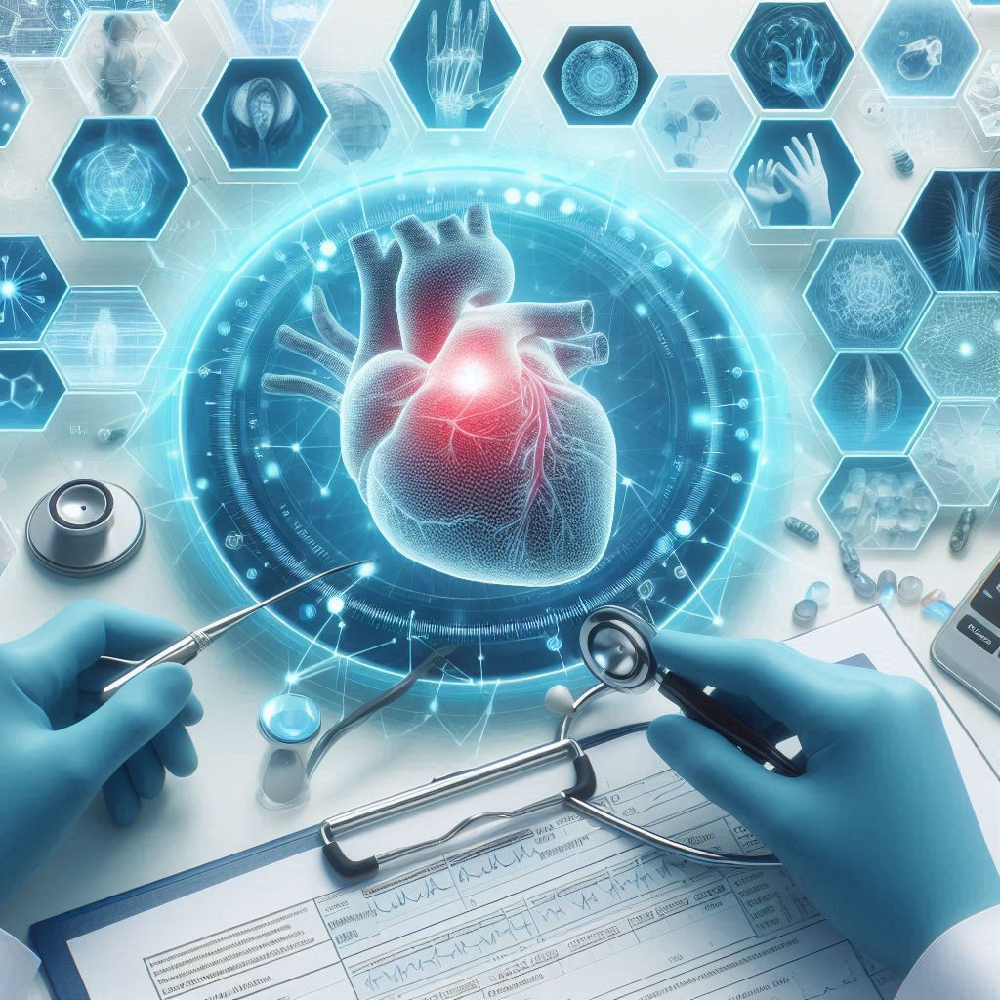

La tecnología es la aplicación de la ciencia para resolver problemas concretos. Se trata de un conjunto de conocimientos y técnicas que se aplican de manera ordenada para alcanzar un objetivo o resolver un problema. La tecnología surge como una respuesta al deseo humano de transformar el entorno y mejorar la calidad de vida.
La tecnología se puede clasificar de diversas maneras dependiendo de las características que se tomen en cuenta.
Desde los inicios de la historia, el ser humano ha desarrollado técnicas para mejorar su calidad de vida. Aunque la tecnología como tal no fue nombrada hasta el siglo XVIII, los descubrimientos a lo largo de la historia han sido fundamentales para el desarrollo de la humanidad.
La gestión de tecnología es el proceso de planificar, implementar, administrar y evaluar los recursos tecnológicos en una organización para asegurar que se alineen con los objetivos estratégicos de la empresa, optimizando su uso y adaptación.
Las clases de tecnología incluyen:
La evolución de la tecnología abarca el progreso desde herramientas primitivas hasta sistemas avanzados, impulsada por la investigación y desarrollo, y ha transformado cómo vivimos, trabajamos y nos comunicamos.
Una hoja de ruta de gestión tecnológica es un plan estratégico que incluye:
La Metodología del proceso objeto se basa en:
27-28 de agosto de 2024
Cada proceso se trata como un objeto independiente con entradas, salidas, recursos y reglas. Esto permite una gestión detallada y optimización.
Ventaja: Proporciona una visión clara y estructurada del impacto de los procesos en el desempeño global.
El modelado gráfico de procesos ayuda a identificar pasos, actores, insumos y resultados esperados, facilitando su análisis y mejora.
Ventaja: Mejora la comprensión y comunicación de los procesos y sus áreas de mejora.
El análisis de datos permite ajustar y optimizar los procesos continuamente para mayor eficiencia.
Ventaja: Asegura que los procesos estén alineados con los objetivos estratégicos y se adapten a cambios.
El uso de indicadores de desempeño monitorea la eficacia de los procesos, garantizando calidad y eficiencia.
Ventaja: Reduce costos, minimiza errores y mejora la satisfacción del cliente.
Los procesos están alineados con la estrategia de la organización, contribuyendo al logro de los objetivos estratégicos.
Ventaja: Facilita la toma de decisiones estratégicas y asegura el uso óptimo de los recursos tecnológicos.
La automatización de tareas repetitivas aumenta la eficiencia y libera recursos para tareas de mayor valor.
Ventaja: Incrementa la eficiencia operativa y reduce el riesgo de errores.
Fomenta la colaboración entre departamentos, asegurando que los procesos fluyan sin interrupciones.
Ventaja: Mejora la cohesión organizacional y evita silos de información.
Se requiere una documentación detallada de los procesos, útil para capacitación, auditorías y mejoras.
Ventaja: Facilita la gestión del conocimiento y asegura la continuidad operativa.
Se implementan métricas para medir el desempeño de los procesos, identificar áreas de mejora y evaluar cambios.
Ventaja: Garantiza una mejora continua basada en datos, adaptándose a las necesidades del mercado.
enlace trello proyecto casa inteligente

El presente sistema se refiere a un software de inteligencia artificial (IA) que utiliza datos médicos para predecir la probabilidad de enfermedades y recomendar tratamientos preventivos. La invención analiza grandes volúmenes de información, como historiales clínicos y resultados de pruebas médicas, utilizando algoritmos avanzados de machine learning. Esto permite a los médicos realizar diagnósticos más precisos y tomar decisiones informadas, mejorando la atención al paciente y promoviendo la medicina preventiva.
El sistema predictivo de diagnóstico médico basado en IA está diseñado para procesar grandes cantidades de datos clínicos. Utiliza técnicas de machine learning y redes neuronales para identificar patrones que predicen la aparición de enfermedades. La IA analiza datos históricos y actuales de pacientes, incluyendo análisis de sangre, imágenes médicas y registros de salud previos, proporcionando una evaluación rápida y precisa del estado de salud. Además, el sistema puede sugerir tratamientos preventivos personalizados y monitorear la eficacia de las intervenciones.
Esta invención pertenece al campo de la inteligencia artificial aplicada a la salud y la medicina, más específicamente a sistemas informáticos para el diagnóstico médico. La invención se desarrolla en un contexto donde los avances tecnológicos permiten la integración de IA en el análisis de datos de salud para ofrecer diagnósticos predictivos y recomendaciones terapéuticas. La invención es aplicable en ámbitos como la salud digital, la telemedicina, la atención hospitalaria, y la prevención personalizada de enfermedades.
Tradicionalmente, los médicos se basan en su experiencia y en los datos médicos disponibles para diagnosticar enfermedades. Sin embargo, con el creciente volumen de datos generados por cada paciente (imágenes médicas, análisis de laboratorio, genética, etc.), se vuelve cada vez más difícil procesar y analizar toda la información manualmente. Existen sistemas de apoyo a la decisión clínica, pero carecen de la capacidad predictiva avanzada de la IA. Además, los diagnósticos muchas veces son reactivos, es decir, se realizan una vez que los síntomas ya son evidentes.
El problema técnico que resuelve la invención es la incapacidad de procesar y analizar eficazmente grandes volúmenes de datos médicos de manera rápida y precisa para predecir la aparición de enfermedades y sugerir intervenciones preventivas. La invención aborda la necesidad de una herramienta automatizada que asista a los médicos en la toma de decisiones clínicas, utilizando IA para identificar patrones complejos que pueden pasar desapercibidos en un análisis humano tradicional.
El sistema está compuesto por una base de datos de acceso a historiales médicos y pruebas diagnósticas, un motor de procesamiento de IA que incluye algoritmos de machine learning, y una interfaz gráfica para médicos y pacientes. Los algoritmos analizan los datos ingresados para generar predicciones basadas en modelos previamente entrenados. Estos modelos se entrenan utilizando datasets médicos con datos históricos de pacientes diagnosticados con diversas enfermedades. La interfaz gráfica presenta los resultados de las predicciones y las recomendaciones de tratamiento en un formato claro y comprensible.
El sistema también permite que los modelos se ajusten y mejoren con el tiempo a medida que se integran nuevos datos, haciendo que las predicciones sean más precisas a medida que se alimentan con más información. Además, el sistema puede emitir alertas en caso de que detecte un alto riesgo de enfermedad, sugiriendo exámenes médicos adicionales o intervenciones tempranas.
El sistema analiza los datos de un paciente, como niveles de colesterol, presión arterial y antecedentes familiares. Basado en patrones previos, el software predice una alta probabilidad de enfermedad cardíaca en los próximos cinco años y sugiere cambios en el estilo de vida, así como tratamientos preventivos.
Pacientes con diabetes pueden usar dispositivos de monitoreo que alimentan datos continuamente al sistema. El software analiza las tendencias y emite alertas si detecta un patrón que indique un riesgo de complicaciones, como cetoacidosis diabética, antes de que los síntomas se presenten.
Utilizando imágenes de resonancia magnética, el sistema puede identificar patrones en tejidos que sugieran la presencia de tumores malignos, recomendando pruebas adicionales o biopsias en áreas específicas de riesgo.